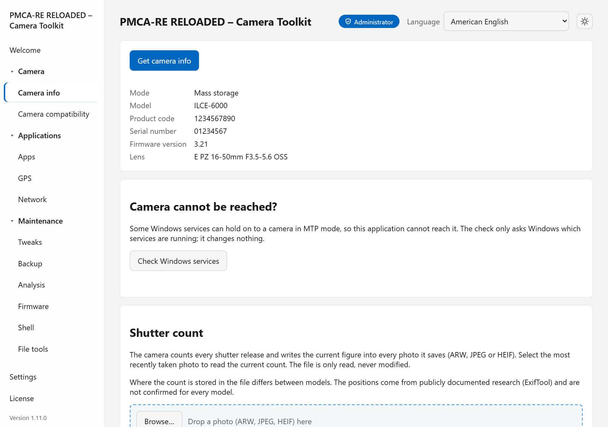
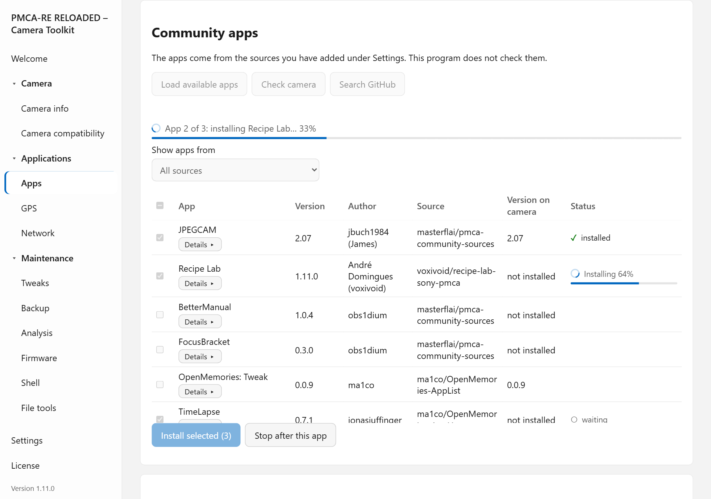

A free desktop toolkit for Sony cameras over plain USB: camera information, shutter count, camera apps, firmware and the camera's settings memory, all in one application.
Windows · macOS · Linux · 27 languages · open source (MIT)


PMCA-RE RELOADED talks to Sony cameras and other Sony imaging devices through their USB interfaces, from early NEX and Alpha bodies to current models, and from compact cameras to action cameras. It is a new implementation, written from scratch in Rust, of the ideas behind Sony-PMCA-RE by ma1co. It needs neither Python nor Zadig.
Model, firmware version, serial number and USB mode. The shutter count is read from any ARW, JPEG or HEIF photo, and the usage log is decoded. No keys and no driver change needed.
Sony's PlayMemories Camera Apps store is closed, but installing apps still works: install an .apk you have, for example OpenMemories: Tweak, or pick one from an app source. Installed apps can be backed up and restored.
Check an official Sony firmware file against the connected camera and install it, or start the updater shell without touching the installed firmware.
Change settings the camera has but does not show in its menu, such as the video recording limit (30-minute limit), all menu languages or PAL/NTSC. Every change is backed up, verified and reversible.
Anyone can publish camera apps and plugins from their own GitHub repository. There is no store and no approval. Plugins run as sandboxed WebAssembly.
No telemetry and no account. No Sony keys or firmware files ship with the program. Expert shells sit behind an Advanced mode switch.
What works depends on the camera's generation. The app's Camera compatibility page lists every known model and what applies to it.
| Device group | Camera info, shutter count, usage log | Apps | Firmware, updater shell | Settings memory, service shell |
|---|---|---|---|---|
| Cameras with PlayMemories Camera Apps (NEX, α, RX and other Cyber-shot models, about 2012–2017, e.g. NEX-5R, NEX-6, α5000, α6000, α7, α7 II, RX100 III–V) | ✔ | ✔ | ✔ | ✔ |
| Newer Sony cameras (about 2018 onwards) | ✔ | ✖ | ✖ | many models |
| Other Sony imaging devices (camcorders, action cameras, compacts without app support) | ✔ | ✖ | model-dependent | model-dependent |
Everything is also available on the command line through pmca-console, for example pmca-console info or pmca-console install --apk <file>.
Use it with cameras you own. Some functions change settings inside the camera and may affect your warranty. Flashing firmware is the most destructive action. Read the safety notes first.
Sony-PMCA-RE by ma1co first worked out how to talk to these cameras. It targets Python 2 and depends in parts on Sony services that have shut down. PMCA-RE RELOADED continues the idea as a new Rust implementation with a desktop app, its own driver handling, key import instead of shipped keys, locally generated update images and a guarded write path.
Yes, on cameras that supported PlayMemories Camera Apps. Install an .apk file directly or choose one from an app source such as the community sources list.
No. Most functions use the drivers Windows already has. Where raw USB is needed, the program assigns a WinUSB driver itself and removes it afterwards. Old Zadig drivers from Sony-PMCA-RE are detected and can be removed.
No. It is an independent open-source project, not made by, endorsed by, or connected to Sony.